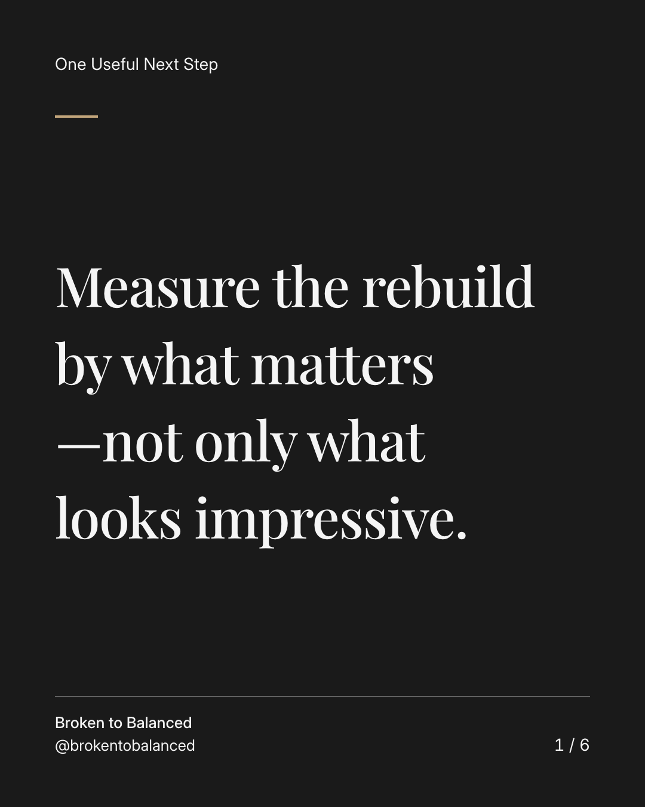
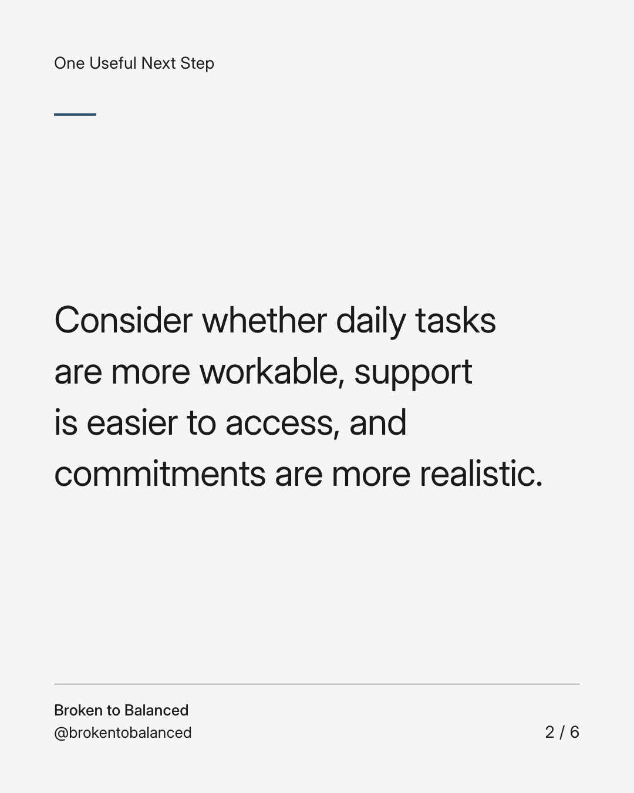
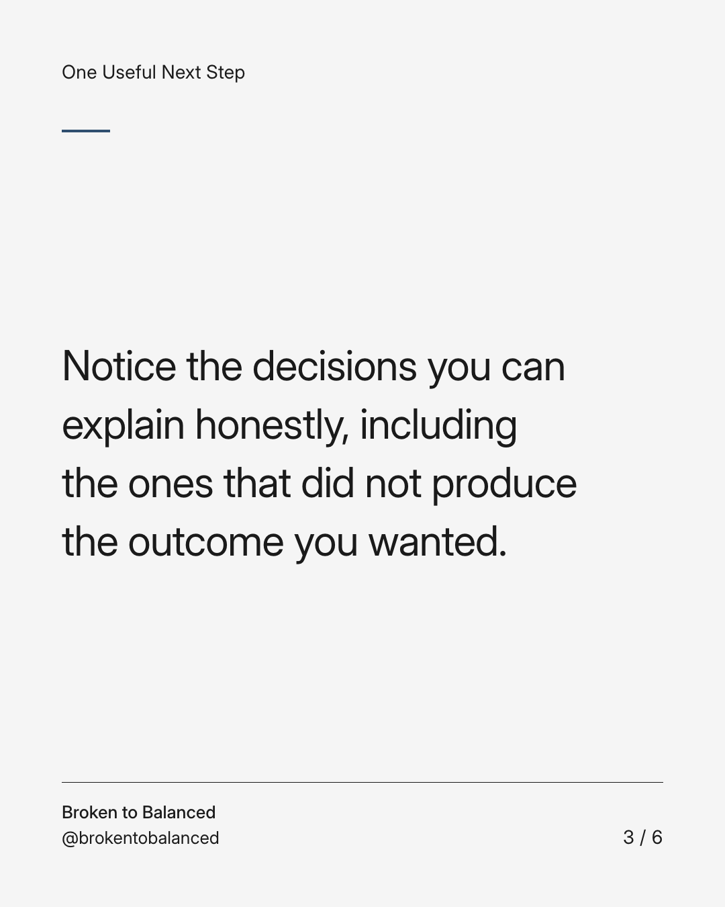
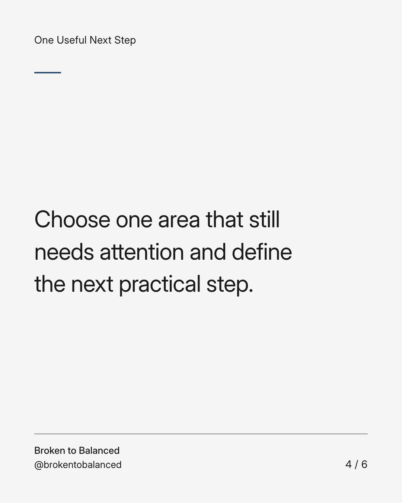
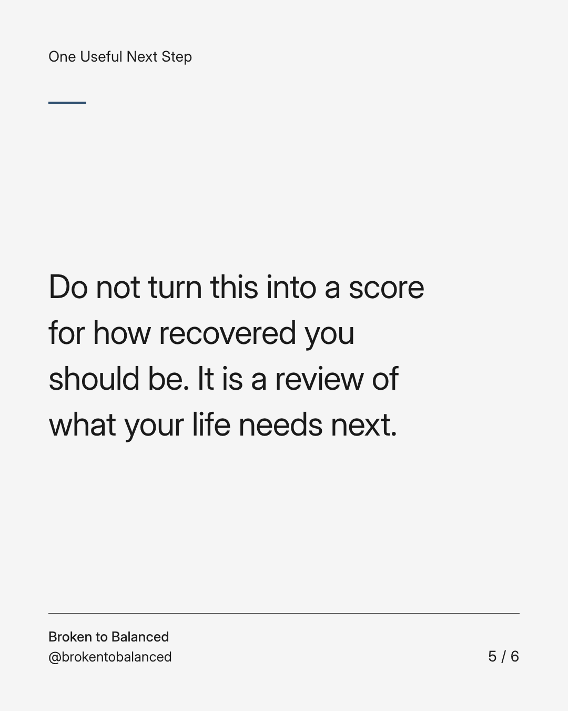
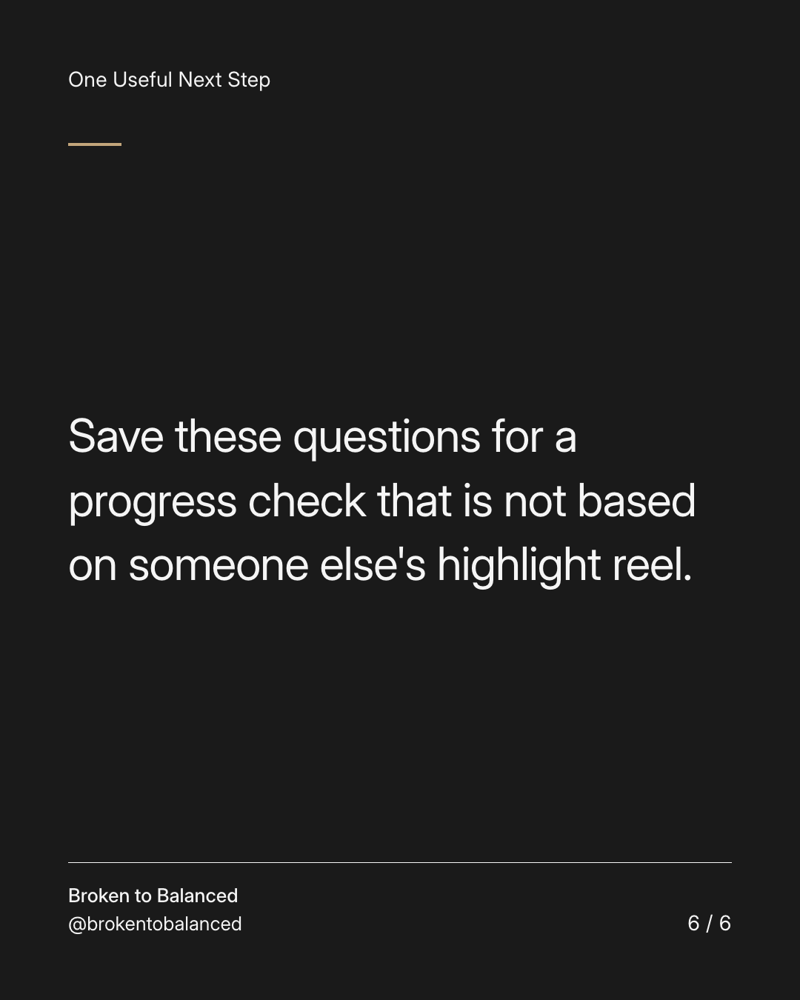

Exact text and accessibility text
Measure the rebuild by what matters—not only what looks impressive.
Slide 1 of 6. Measure the rebuild by what matters—not only what looks impressive.


Exact text and accessibility text
Consider whether daily tasks are more workable, support is easier to access, and commitments are more realistic.
Slide 2 of 6. Consider whether daily tasks are more workable, support is easier to access, and commitments are more realistic.


Exact text and accessibility text
Notice the decisions you can explain honestly, including the ones that did not produce the outcome you wanted.
Slide 3 of 6. Notice the decisions you can explain honestly, including the ones that did not produce the outcome you wanted.


Exact text and accessibility text
Choose one area that still needs attention and define the next practical step.
Slide 4 of 6. Choose one area that still needs attention and define the next practical step.


Exact text and accessibility text
Do not turn this into a score for how recovered you should be. It is a review of what your life needs next.
Slide 5 of 6. Do not turn this into a score for how recovered you should be. It is a review of what your life needs next.


Exact text and accessibility text
Save these questions for a progress check that is not based on someone else's highlight reel.
Slide 6 of 6. Save these questions for a progress check that is not based on someone else's highlight reel.
Exact caption
Plain-text fallback: select and copy the caption.